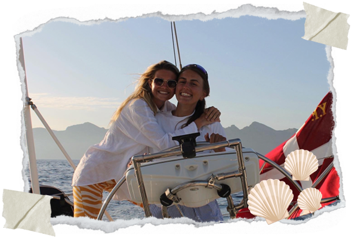

De to eventyrlystende piger Anna og Rebecca rejste for knap et år siden til Spanien i håbet om, at finde deres drømmebåd.
Efter længere søgen faldt de to piger over en ældre fransk sejlbåd bygget i 1989. Pigerne overtog båden i april 2022 og døbte den Yolene.
Siden overtagelsen har Anna og Rebecca gjort Yolene til deres helt egen og forvandlet hende til deres flydende drømmehjem. Til August 2023 sejler pigerne afsted på eventyr, hvor det er muligt at komme med som gast på forskellige togter.
Hvem er vi?
Anna og Rebeccas livsbaner krydsede hinandens i 2018, hvor de begge studerede på Horsens handelsgymnasium. Det var først da skoleåret gik på hæld, at de to piger faldt i snak. Derefter brugte de oceaner af timer på at lære hinanden at kende og fandt på rekordtid stjernestatus hos hinanden. Et lykketræf førte dem til den anden side af jorden, som gaster på en båd i Stillehavet. Her tilbragte de et halvt år i Fransk Polynesien og forskelede sig hurtigt i tilværelsen. Det var her deres drøm om en dag at være kaptajner på egen båd opstod.

Hvorfor Yolene?
Anna og Rebecca’s båd er opkaldt efter en helt særlig person. Da de selv var gaster på en sejlbåd i Fransk Polynesien flyttede de på landet i et par uger. Her boede de oppe i bjergene på vulkanøen Nuku Hiva, hos en kvinde ved navn Yolene. Yolene inspirerede de to piger igennem hendes hjælpsomhed, åbenhed, nysgerrighed, passion og kærlighed. I løbet af disse uger blev opfattelsen af, hvad livet egentlig handler om sat i perspektiv for de to piger. På sin vej gennem livet, de drømme og de udfordringer der måtte opstå, sagde Yolene altid til sig selv ”Jeg har to hænder – jeg kan skabe lige akkurat det, jeg drømmer om”. Disse værdier er særlig vigtige for Anna og Rebecca, at deres båd vil bære gennem bølgerne.
Vil du med?
Togt 1 // Europa
Læs mere her!
På dette togt starter vores jordomsejling, og vi vinker farvel til vores kære hjemhavn i Aarhus. Vi sejler ned langs Europas vidunderlige kyst, som byder på enormt hyggelige havnebyer. Kursen er sat mod Atlanterhavet, hvor vi ender på Madeira. Her skal vi udforske, hike og måske er vi så heldige at spotte hvaler der lægger vejen forbi den smukke Atlanterhavsø.
Togt 2 // Atlanterhavet
Læs mere her!
Dette togt starter på den smukke Atlanterhavsø, Madeira. Her er der rig mulighed for at få nogle hikes i benene, inden vi skal ud på vores hidtil længste sejlads. Inden da, kan vi dog nyde en sejlads til De Kanariske Øer. Her skal vi proviantere, klargøre Yolene og vente på det perfekte vejrvindue til vores Atlanterhavskryds. Efter 2-3 ugers sejlads med passatvinden i ryggen når vi frem til Barbados i Caribien. Traditionen tro tager vi røde bukser på og udforsker hvad Caribien har at byde på før togtet slutter på St. Vincent.
Togt 3 // Caribien
Læs mere her!
Vi går i Columbus' fodspor, og starter togtet ud på St. Vincent. Her kan vi snorkle, lave bål på stranden og udforske ukendt land. Hernæst drømmer vi om at sejle videre til St. Lucia og opleve øens vulkanstrande og frodige jungleliv. Så sætter vi sejl med Martinique i kikkerten. Øen anses for at være Det Caribiske Havs juvel. Et udsøgt undervandsparadis venter, bjerge der skal bestiges og mad der skal smages. Hernæst er kursen sat mod Dominicas vidunderlige vandfald. Guadeloupe, Antigua, Barbuda er lige så på vores ønskede liste, over steder vi drømmer om at sejle til på togtet. Endedestinationen efter to magiske måneder er i Dansk Vestindien. Togtet er skabt til, at blive rig på oplevelseskontoen, og vi glæder os til kridhvid sand mellem tæerne, lokalt liv og turkisblåt vand.